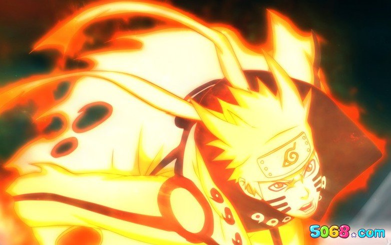

火影忍者
简介
《火影忍者》是日本漫画家岸本齐史的代表作，作品于1999年开始在《周刊少年JUMP》上连载，于2014年11月10日发售的JUMP第50号完结；后日谈性质的外传漫画《火影忍者外传：第七代火影与绯色花月》则于同杂志2015年第22、23合并号开始短期连载，至同年第32号完结。
故事成功地将原本隐藏在黑暗中，用世界上最强大的毅力和最艰辛的努力去做最密不可宣和隐讳残酷的事情的忍者，描绘成了太阳下最值得骄傲最光明无限的职业。在岸本齐史笔下的忍者世界中，每一位年轻的忍者都在开拓着属于自己的忍道。
人物简介
漩涡鸣人

火之国木叶隐村的忍者，四代目火影波风水门和漩涡玖辛奈之子，六道仙人次子阿修罗转世。刚出生时父母为保护村子而牺牲，并将强大的尾兽“九尾”封印于鸣人体内。 鸣人在孤独中长大，但在唯一认同他的老师海野伊鲁卡以及三代目火影鼓励下逐渐决定要成为火影，让所有人都认同他的存在。成为下忍后，同旗木卡卡西、宇智波佐助和春野樱组成第七班进行各种任务。为实现梦想，和守护伙伴们的羁绊，鸣人不断修炼，作为木叶“三忍”之一自来也的弟子，在追寻梦想的过程中不断突破自我，贯彻了自身的忍道，得到了包括九喇嘛与佐助在内的所有人的认可，成为完美人柱力，最后与包括九尾在内的伙伴们一同终结了战争，为忍者世界带来和平，并实现自己成为火影和忍界英雄的梦想。
宇智波佐助
 火之国木叶隐村宇智波一族的天才忍者，六道仙人长子因陀罗的转世。
年幼时目睹宇智波一族被哥哥宇智波鼬所灭，从而走上复仇之路。在终结谷与漩涡鸣人大战后叛离村子并追随大蛇丸。三年后，佐助吸收了大蛇丸的力量并成功向鼬复仇，但在此之后却得知了灭族的真相，于是决定摧毁木叶。后来，佐助与秽土转生的鼬重逢，想法再次发生了变化，为了进一步了解忍者、家族、哥哥的过去，佐助与秽土转生的历代火影进行了对话，在听完其回答后决定继承鼬的意志守护木叶，并期望成为火影改变现有的忍者世界体制。
第四次忍界大战结束后，佐助因对于维护世界和平的道路选择和鸣人不同，而在终结之谷与鸣人进行了宿命之战，结果两人各断一条手臂。最终佐助被鸣人感动，认同了鸣人的道路，并重新成为木叶的一员。
此后佐助独自一人游历世界，守护木叶及忍者世界。
火之国木叶隐村宇智波一族的天才忍者，六道仙人长子因陀罗的转世。
年幼时目睹宇智波一族被哥哥宇智波鼬所灭，从而走上复仇之路。在终结谷与漩涡鸣人大战后叛离村子并追随大蛇丸。三年后，佐助吸收了大蛇丸的力量并成功向鼬复仇，但在此之后却得知了灭族的真相，于是决定摧毁木叶。后来，佐助与秽土转生的鼬重逢，想法再次发生了变化，为了进一步了解忍者、家族、哥哥的过去，佐助与秽土转生的历代火影进行了对话，在听完其回答后决定继承鼬的意志守护木叶，并期望成为火影改变现有的忍者世界体制。
第四次忍界大战结束后，佐助因对于维护世界和平的道路选择和鸣人不同，而在终结之谷与鸣人进行了宿命之战，结果两人各断一条手臂。最终佐助被鸣人感动，认同了鸣人的道路，并重新成为木叶的一员。
此后佐助独自一人游历世界，守护木叶及忍者世界。
宇智波鼬
火之国木叶隐村宇智波一族的成员，宇智波佐助的哥哥。是宇智波一族的天才忍者，年少时跟宇智波止水是挚友，擅长幻术。为了保护村子免受战乱，接受了木叶上层给予的将宇智波一族灭族的任务，之后加入晓组织做木叶的卧底。最终在与弟弟宇智波佐助的战斗中为佐助注入瞳力后，因身体患有不治之症，体力不支而亡。
第四次忍界大战中被药师兜秽土转生，在和漩涡鸣人与奇拉比的战斗中由于使用了万花筒写轮眼，触发了原本留给鸣人体内装有止水左眼的乌鸦并对鼬使用了别天神，进而使鼬摆脱秽土转生的操控，后与佐助合力制服药师兜，最终解除秽土转生，灵魂升天。
尾兽
尾兽原为查克拉创造神十尾的一部分，因六道仙人大筒木羽衣从阿修罗的生存方式中得到启发，于是将体内十尾的查克拉抽出，并利用阴阳遁术制造而生。十尾由于失去查克拉而变成了空壳，形成了外道魔像，羽衣用地爆天星将外道魔像封印在月亮内，之后六道仙人从体内抽出了九只尾兽，一度也因此而十分虚弱。
- 一尾
- 守鹤 我爱罗
- 二尾
- 又旅 二位由木人
- 三尾
- 矶抚 矢仓
- 四尾
- 孙悟空 老紫
- 五尾
- 穆王 汉
- 六尾
- 犀犬 羽高
- 七尾
- 重明 芙
- 八尾
- 牛鬼 奇拉比
- 九尾
- 九喇嘛 漩涡鸣人